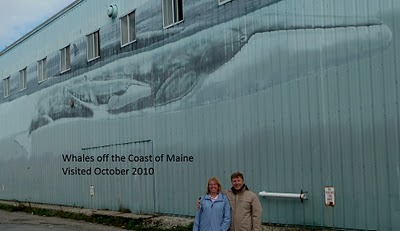

One of the first things we noticed walking by Whales off the Coast of Maine was the sea turtle which we saw for the first time. This wall is in a great spot as you can walk right along it for the full length of the pier.
The sun has taken it’s toll on this wall with the images showing significant fading but it’s definitely worth seeing.
Like the wall in New Bedford this wall let’s you see several different types of whales as well as dolphins all on one wall.
BIW Building – Marine State Pier
Portland, Maine
1000 Feet Long x 25 Feet High
Dedicated June 7, 1993
Excerpt from @wylandfoundation on Instagram
The first stop of Wyland’s formidable 17-mural, 17-city, 17-week East Coast Tour got off to a slippery start in Portland, Maine. On Tuesday, June 1, with everything in place and ready to go, the artist, his crew, and the township of Portland had to wait out a cold, pelting rainstorm before the first dab of paint could be applied to the side of the Bath Iron Works, opposite the Maine State Pier.
“How about a rain dance?” Wyland said at last, standing beneath one of the press tents that had been erected for the event. Realizing he only had six days to complete the mural before flying to the next city on the tour, he ran out onto the pier and danced a jig in the midst of the downpour. Half an hour later, the rain slowed and soon stopped altogether. Team Wyland wasted no time. They climbed up, wiped the wall down and started spraying the paint.
“Before we flew to Portland, I had contacted my friend Steven Katona, a leading marine mammal scientist from the College of the Atlantic, to find out what types of whales, dolphins, seals and other marine life inhabited the Gulf of Maine and, for that matter, the entire coastline,” the artist recalls.
Just in time for Sunday’s Old Port Festival, in which he served as Grand Marshal, Wyland completed the mural. Measuring about 1,000 feet in length, the wall had become the ocean habitat for a mother humpback whale and her calf, finback whales, minke whales, white-sided dolphins, Atlantic bottlenose dolphins, sea lions and a loggerhead turtle.